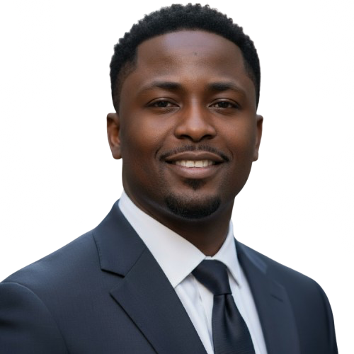

The person behind the data
Data Scientist · ML Engineer · AI Engineer
Before data science, I spent years in logistics and operations preparing vehicle inventories for resale and managing material flows in recycling. I learned to think in systems: inputs, outputs, bottlenecks, waste.
"When I discovered data science, I realised I'd been solving the same problems manually all along. Now I build the intelligent systems that do it at scale."
Originally from Nigeria, now based in Germany, I bring a global perspective and a deep appreciation for efficiency to every problem I work on. I'm drawn to work where data isn't just reported, but actually changes a decision.
My path
Operations Era
Worked across vehicle preparation logistics and industrial recycling operations. Built strong instincts for process flow, efficiency, and reducing waste skills that translate directly into data engineering and ML pipelines.
The Pivot
Moving to Germany opened a new chapter. I made the deliberate decision to transition into technology - choosing data science because it sat at the intersection of analytical thinking, real-world systems, and future impact.
2025 - Present
Intensive training covering the full data science stack: Python, SQL, machine learning, deep learning, cloud pipelines, and AI engineering. Built a growing portfolio across analytics, NLP, computer vision, data engineering, and full-stack applications.
Now
Building data and AI products, including review analytics and a care-operations dashboard. Actively seeking roles where I can contribute to data-driven products that solve real problems for real people.
How I work
Years in logistics taught me to see the whole flow not just individual steps. I design data solutions that hold together end-to-end.
I don't stop at notebooks. I build things that run APIs, dashboards, pipelines, deployed models. Code that works outside my laptop matters.
I take the time to understand the data, validate assumptions, and make results explainable. Insight without integrity is noise.
Growing up in Nigeria and working in Germany gives me an instinct for diverse contexts essential for data that reflects the real world.
Right now
Location
Germany 🇩🇪
Status
Open to hire
Building
Review Analytics + Care Operations Dashboard
Learning
MLOps & LLM Agents
Target roles
Data Scientist · ML Engineer · AI Engineer
I'm open to full-time roles, contracts, and collaborations across data science, machine learning, and AI engineering. Based in Germany, open to remote.